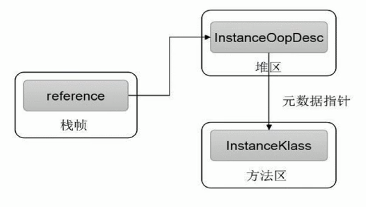
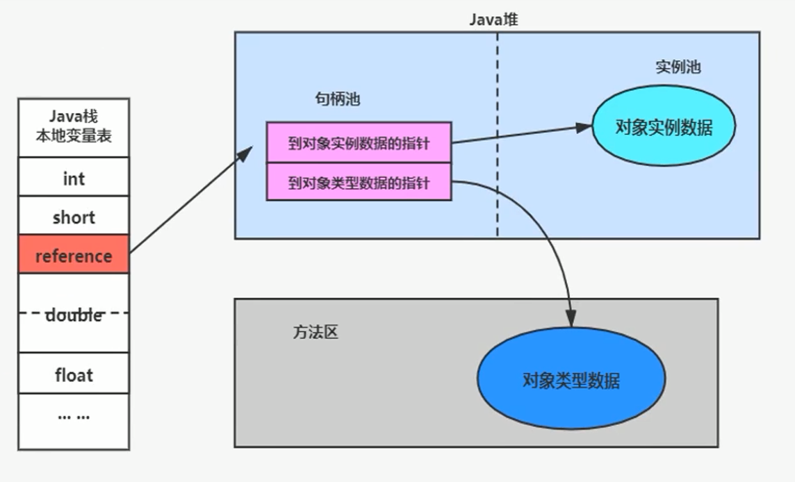
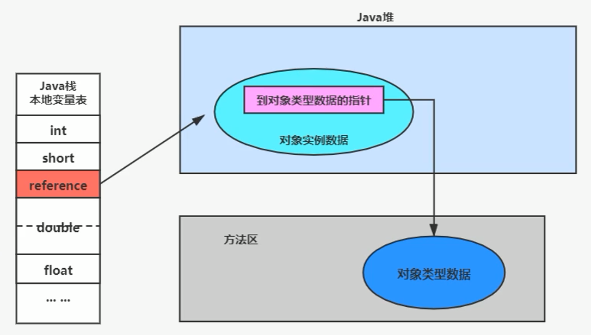
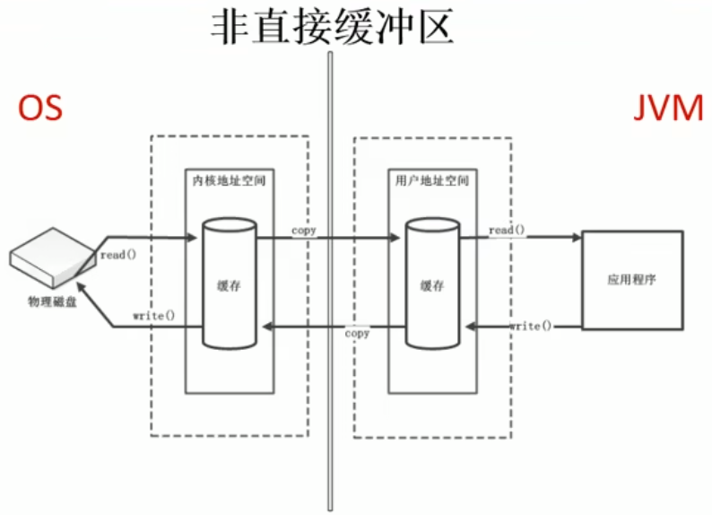
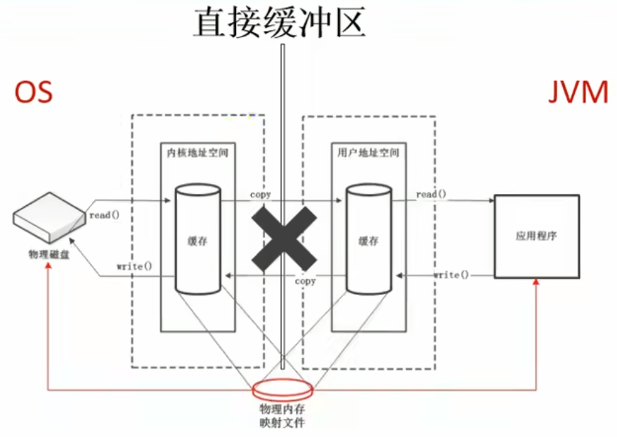

对象的实例化内存布局与访问定位
1-对象的实例化
- 对象在 JVM 中是怎么存储的？
- 对象头信息里面有哪些东西？
- Java 对象头里有什么
判断对象对应的类是否加载、链接、初始化
-
虚拟机遇到一条new指令，首先去检查这个指令的参数能否在Metaspace的常量池中定位到一个类的符号引用，并且检查这个符号引用代表的类是否已经被加载，解析和初始化。（即判断类元信息是否存在）。
-
如果该类没有加载，那么在双亲委派模式下，使用当前类加载器以ClassLoader + 包名 + 类名为key进行查找对应的.class文件，如果没有找到文件，则抛出ClassNotFoundException异常，如果找到，则进行类加载，并生成对应的Class对象。
为对象分配内存
首先计算对象占用空间的大小，接着在堆中划分一块内存给新对象。如果实例成员变量是引用变量，仅分配引用变量空间即可，即4个字节大小
指针碰撞
- 如果内存是规整的，那么虚拟机将采用的是指针碰撞法（Bump The Point）来为对象分配内存。
- 意思是所有用过的内存在一边，空闲的内存放另外一边，中间放着一个指针作为分界点的指示器，分配内存就仅仅是把指针往空闲内存那边挪动一段与对象大小相等的距离罢了。
- 如果垃圾收集器选择的是 Serial ，ParNew 这种基于压缩算法的，虚拟机采用这种分配方式。一般使用带 Compact（整理）过程的收集器时，使用指针碰撞。
- 标记压缩（整理）算法会整理内存碎片，堆内存一存对象，另一边为空闲区域
空闲列表分配
- 如果内存不是规整的，已使用的内存和未使用的内存相互交错，那么虚拟机将采用的是空闲列表来为对象分配内存。
- 意思是虚拟机维护了一个列表，记录上哪些内存块是可用的，再分配的时候从列表中找到一块足够大的空间划分给对象实例，并更新列表上的内容。这种分配方式成为了 空闲列表（Free List）
- CMS 标记清除算法清理过后的堆内存，就会存在很多内存碎片。
说明
- 选择哪种分配方式由 Java 堆是否规整所决定，而Java堆是否规整又由所采用的垃圾收集器是否带有压缩整理功能决定
设置对象的对象头
将对象的所属类(即类的元数据信息)、对象的HashCode和对象的GC信息、锁信息等数据存储在对象的对象头. 这个过程的具体设置方式取决于JVM实现.
执行 init 方法进行初始化
- 在 Java 程序的视角看来，初始化才正式开始。初始化成员变量，执行实例化代码块，调用类的构造方法，并把堆内对象的首地址赋值给引用变量
- 因此一般来说（由字节码中跟随
invokespecial指令所决定），new指令之后会接着就是执行init方法，把对象按照程序员的意愿进行初始化，这样一个真正可用的对象才算完成创建出来。
2-对象的内存布局
代码示例
public class Customer {
int id = 1001;
String name;
Account acct;
{
name = "匿名客户";
}
public Customer() {
acct = new Account();
}
public static void main(String[] args) {
Customer cust = new Customer();
}
}
class Account {
}
3-对象的访问定位
JVM 是如何通过栈帧中的对象引用访问到其内部的对象实例呢？



直接内存
概述
直接内存
(Direct Memory)
-
不是虚拟机运行时数据区的一部分，也不是《Java 虚拟机规范》中定义的内存区域。
-
直接内存是在Java堆外的、直接向系统申请的内存区间。
-
来源于 NIO，通过存在堆中的 DirectByteBuffer 操作 Native 内存
-
通常，访问直接内存的速度会优于 Java 堆。即读写性能高。
- 因此出于性能考虑，读写频繁的场合可能会考虑使用直接内存。
- Java 的 NIO 库允许 Java 程序使用直接内存，用于数据缓冲区
NIO 与 BIO
非直接缓存区(BIO)
- 读写文件, 需要与磁盘交互, 需要由用户态切换到内核态. 在内核态时, 需要内存如下图的操作
- 使用IO, 这里需要两份内存存储重复数据, 效率低

直接缓冲区(NIO)
- 使用 NIO 时, 如下图. 操作系统划出的直接缓存区可以被 Java 代码直接访问, 只有一份. NIO 适合堆大文件的读写操作

直接内存与OOM
-
直接内存也可能导致 OutofMemoryError 异常
-
由于直接内存在Java堆外，因此它的大小不会直接受限于 -Xmx 指定的最大堆大小，但是系统内存是有限的，Java 堆和直接内存的总和依然受限于操作系统能给出的最大内存。
-
直接内存的缺点为：
- 分配回收成本较高
- 不受 JVM 内存回收管理
-
直接内存大小可以通过 MaxDirectMemorySize 设置
-
如果不指定，默认与堆的最大值 -Xmx 参数值一致
/**
* 本地内存的OOM: OutOfMemoryError: Direct buffer memory
*
*/
public class BufferTest2 {
private static final int BUFFER = 1024 * 1024 * 20;//20MB
public static void main(String[] args) {
ArrayList<ByteBuffer> list = new ArrayList<>();
int count = 0;
try {
while(true){
ByteBuffer byteBuffer = ByteBuffer.allocateDirect(BUFFER);
list.add(byteBuffer);
count++;
try {
Thread.sleep(100);
} catch (InterruptedException e) {
e.printStackTrace();
}
}
} finally {
System.out.println(count);
}
}
}

简单理解
Java process memory = Java heap + native memory